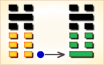

周易第8卦_比卦(水地比)_坎上坤下
如有疑问互相交流，微信：470283584
周易第8卦详解
比卦原文
比。吉。原筮，元永贞，无咎。不宁方来，后夫凶。
象曰：地上有水，比。先王以建万国，亲诸侯。
白话文解释
比卦：吉利。同时再卜筮，仍然大吉大利。卜问长时期的吉凶，也没有灾祸。不愿臣服的邦国来朝，迟迟不来者有难。
《象辞》说：下卦为坤，上卦为坎，坤为地，坎为水，像地上有水，这是比卦的卦象。先王观此卦象，取法于水附大地，地纳江河之象，封建万国，亲近诸侯。
《断易天机》解
比卦坎上坤下，为坤宫归魂卦。比为相亲相依附之意，长期如此，就会无咎，所以吉祥。
北宋易学家邵雍解
水行地上，亲比欢乐；人情亲顺，百事无忧。
得此卦者，可获朋友之助，众人之力，谋事有成，荣显之极。
台湾国学大儒傅佩荣解
时运：众人相贺，荣显之极。
财运：善人相扶，大发利市。
家宅：百年好合。
身体：心腹水肿，宜早求治。
传统解卦
这个卦是异卦（下坤上坎）相叠，坤为地，坎为水。水附大地，地纳河海，相互依赖，亲密无间。此卦与师卦完全相反，互为综卦。它阐述的是相亲相辅，宽宏无私，精诚团结的道理。
大象：一阳统五阴，比邻相亲相辅，和乐之象。
运势：平顺，可得贵人提拔，凡事宜速战速决，不可过份迟疑。
事业：顺利能够成功，向前发展，可以得到他人的帮助和辅佐，以诚实、信任的态度去做事。待人宽厚、正直，主动热情，向才德高尚的人士学习，听取建议。
经商：愿望能够实现，且有较丰厚的利润，但需要与他人密切合作，真诚交往，讲究商业道德，遵守信义，如唯利是图，贪心不足，或自以为是，会导致严重损失。
求名：有成功的希望，不仅要靠个人的努力，更为重要的是他人的赏识和栽培。
婚恋：美好姻缘，相亲相爱，彼此忠诚，白头到老。
决策：心地善良，待人忠诚、厚道，乐于帮助他人，也能得到回报。工作勤恳，对自己要求严格，可以实现自己的理想，但要多动脑筋，多思考，善于判断是非，尤其要注意选择朋友，一旦结上品行不端的人，会成为自己的祸患。如果与比自己高明的人交朋友，并取得帮助，会终身受益。
台湾张铭仁解卦
比：表示兄友比肩而站，一片融合互持、比和之意。主吉象。水溶入土中，胶和在一起，是个很亲密的卦象，尤其是论男女之情。事业投资有亲密的伙伴相助，共同扶持打拼，事事当然顺利进行。
解释：平等、比合。
特性：勤劳，认真，善良，谦恭，务实，踏实，重生活享受。异性缘多，感情烦恼也多。
运势：平顺可得贵人提拔，凡事宜速战速决，不可过份迟疑。
家运：合家和乐，家运亨通。
疾病：新病宜速就医，久病则危，为腹、肾、耳等疾。
胎孕：孕安。
子女：儿女温顺且侍亲至孝，亲情融合之象。
周转：必成、找同年之兄弟、朋友可成。
买卖：莫太贪心。交易反覆难成，勿贪则有利可成。
等人：会来。
寻人：不在杏花处，则是有妇人相留，不可寻，恐生不测之祸。此人会自己回来。
失物：不会再现。通常均已遭损毁。
外出：旅途平安，一路顺风。
考试：金榜题名。
诉讼：宜以和解态度面对，虽小人多，但可胜诉。
求事：有贵人帮助，可成。
改行：有利，可得友人支持。
开业：可大发利市，但须注意有人背叛。
周易第8卦初六爻详解
初六爻辞
初六。有孚比之，无咎。有孚盈缶，终来有它吉。
象曰：比之初六，有它吉也。
白话文解释
初六：捕获俘虏，安抚他们，没有灾难。捕获俘虏，满盆满罐的酒饭招待他们。虽然可能有意外之患，但最后是吉利的。
《象辞》说：筮遇初六之爻，虽有意外之患，但最后是吉利的。
北宋易学家邵雍解
吉：得此爻者，会遇到知己，谋事称心如意。做官的会有意外之喜。
台湾国学大儒傅佩荣解
时运：诚信交往，声名日隆。
财运：信用卓著，利益自来。
家宅：社区和睦；亲事亦谐。
身体：平安无事。
初六变卦

初六爻动变得周易第3卦：水雷屯 。这个卦是异卦（下震上坎）相叠，震为雷，喻动；坎为雨，喻险。雷雨交加，险象丛生，环境恶劣。“屯”原指植物萌生大地，万物始生，充满艰难险阻，然而顺时应运，必欣欣向荣。
周易第8卦六二爻详解
六二爻辞
六二。比之自内，贞吉。
象曰：比之自内，不自失也。
白话文解释
六二：内部和睦团结，卜问得吉兆。
《象辞》说：内部和睦团结，就不会失掉民心。
北宋易学家邵雍解
吉：得此爻者，得贵人之助，营谋遂意。做官的会无过失，安然而吉亨。读书人或能成名。女命则会得贤夫。
台湾国学大儒傅佩荣解
时运：实至名归，自然吉祥。
财运：同心协力，获利可期。
家宅：亲上加亲。
身体：心平气和，疾病可愈。
六二变卦

六二爻动变得周易第29卦：坎为水。这个卦是同卦（下坎上坎）相叠。坎为水、为险，两坎相重，险上加险，险阻重重。一阳陷二阴。所幸阴虚阳实，诚信可豁然贯通。虽险难重重，却方能显人性光彩。
周易第8卦六三爻详解
六三爻辞
六三。比之匪人。
象曰：比之匪人，不亦伤乎。
白话文解释
六三：跟败类狼狈为奸。
《象辞》说：跟败类狼狈为奸，不是很可悲吗？
北宋易学家邵雍解
凶：得此爻者，交友不慎，或有争诉，破财刑伤。做官的要谨防同僚不睦而造成不顺。女子则所嫁并非良人，破家丧身之象，不然则会争诉破财。
台湾国学大儒傅佩荣解
时运：交友不正，声名破败。
财运：所托非人，损耗难免。
家宅：戒慎嫁娶，以免遗憾。
身体：改求良医。
六三变卦

六三爻动变得周易第39卦：水山蹇。这个卦是异卦（下艮上坎）相叠。坎为水，艮为山。山高水深，困难重重，人生险阻，见险而止，明哲保身，可谓智慧。蹇，跋行艰难。
周易第8卦六四爻详解
六四爻辞
六四。外比之，贞吉。
象曰：外比于贤，以从上也。
白话文解释
六四：跟外邦联盟亲善，卜问得吉兆。
《象辞》说：外部亲附于贤明的国君，像臣下服从君上。
北宋易学家邵雍解
吉：得此爻者，出外有利，多得知己之力，事事顺利。做官的会有升迁之喜。
台湾国学大儒傅佩荣解
时运：得人赏识，功名可期。
财运：货物流通，利润自来。
家宅：一家和睦；外地定亲，吉。
身体：多做户外运动。
六四变卦

六四爻动变得周易第45卦：泽地萃。这个卦是异卦（下坤上兑）相叠。坤为地、为顺；兑为泽、为水。泽泛滥淹没大地，人众多相互斗争，危机必四伏，务必顺天任贤，未雨绸缪，柔顺而又和悦，彼此相得益彰，安居乐业。萃，聚集、团结。
周易第8卦九五爻详解
九五爻辞
九五。显比，王用三驱，失前禽。邑人不诫，吉。
象曰：显比之吉，位正中也。舍逆取顺，失前禽也。邑人不诫，上使中也。
白话文解释
九五：普遍的和洽。君王采用三面包围的方法狩猎，网开一面，有意放走逃奔的野兽。老百姓对君王狩猎毫不惊惧。筮遇此爻吉利。
《象辞》说：普遍的和洽是吉利的，因为九五之爻处于上卦中位，像人守中正之道。放走向前奔逃的，猎取迎面奔窜的，这就是“失前禽”的缘故。老百姓对君王狩猎毫不惊惧，因为君王平时行事端正。
北宋易学家邵雍解
吉：得此爻者，会先逆后顺，谋事有成，无往不利。做官的会有大的荣耀。读书人会考的佳绩。
台湾国学大儒傅佩荣解
时运：善待别人，后仍有吉。
财运：不贪小利，后有盈余。
家宅：和顺为宜。
身体：服药生效，不必过虑。
九五变卦

九五爻动变得周易第2卦：坤为地。这个卦是同卦（下坤上坤）相叠，阴性。象征地（与乾卦相反），顺从天，承载万物，伸展无穷无尽。坤卦以雌马为象征，表明地道生育抚养万物，而又依天顺时，性情温顺。它以“先迷后得”证明“坤”顺从“乾”，依随“乾”，才能把握正确方向，遵循正道，获取吉利。
周易第8卦上六爻详解
上六爻辞
上六。比之无首，凶。
象曰：比之无首，无所终也。
白话文解释
上六：小人朋比为奸，勾心斗角，无法形成一个团结的中心，这是非常危险的事。
《象辞》说：小人朋比为奸，勾心斗角，无法形成一个团结的中心，当然没有好下场。
北宋易学家邵雍解
凶：得此爻者，刑克有灾，人情淡薄，甚者恐有性命之忧。做官的会失去下属的支持，处境危难。
台湾国学大儒傅佩荣解
时运：六神无主，恐有凶祸。
财运：白费心机，一无所获。
家宅：恐丧家主；婚嫁来历不明。
身体：小心头部疾病。
上六变卦
上六爻动变得周易第20卦：风地观。这个卦是异卦（下坤上巽）相叠，风行地上，喻德教遍施。观卦与临卦互为综卦，交相使用。在上者以道义观天下；在下者以敬仰瞻上，人心顺服归从。